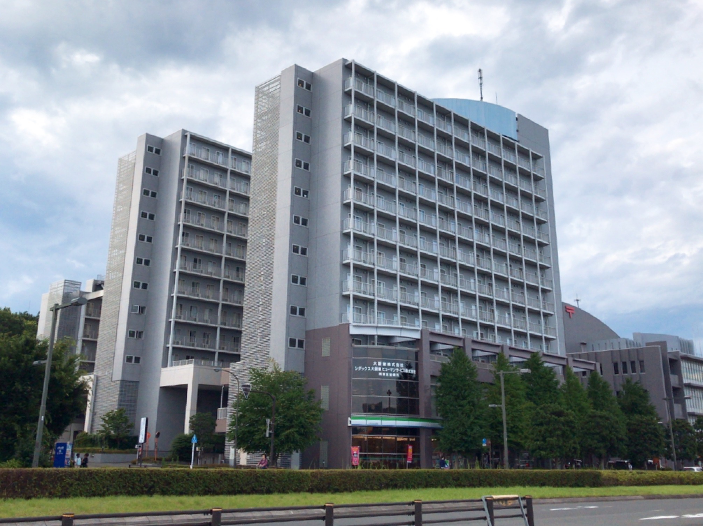
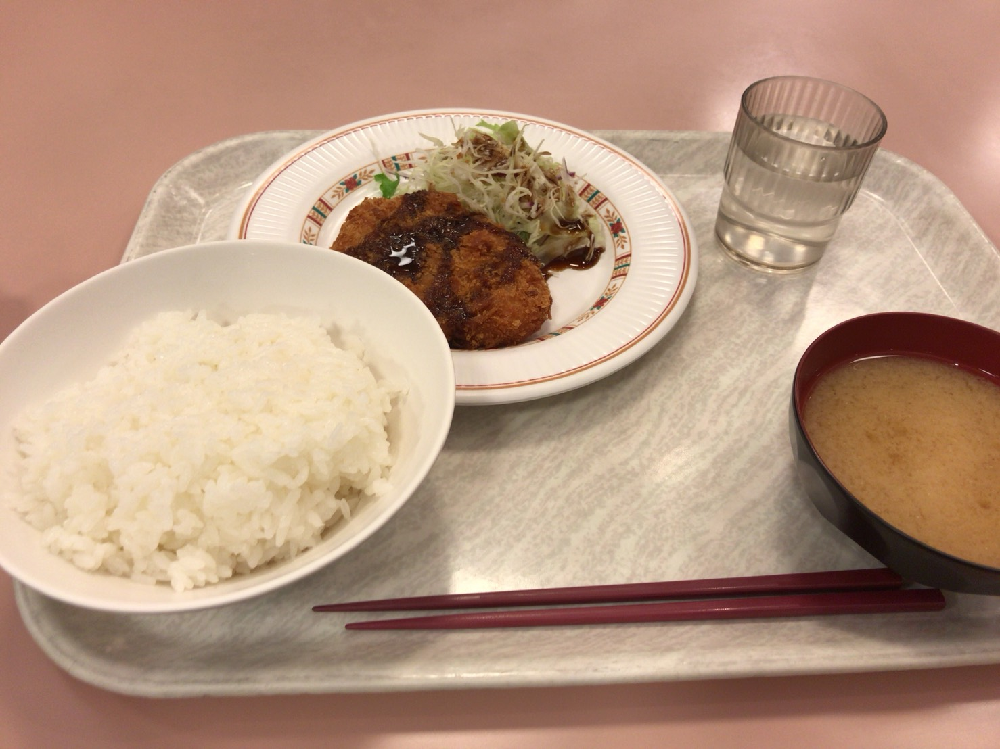
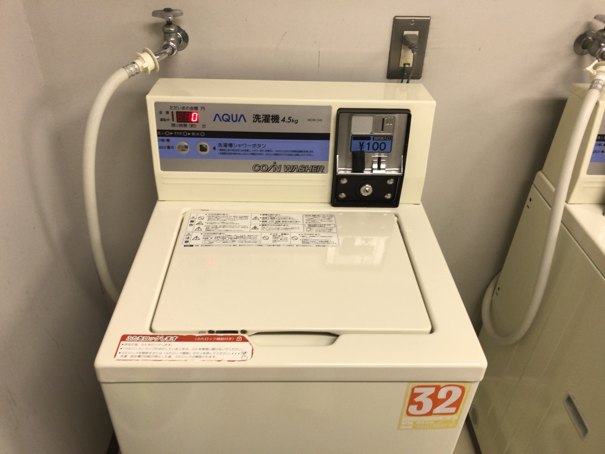

学生会館とは？
☆第一学生会館について
- 男女共用で3～9階が男子、10～12階が女子に部屋が分けられている。
- トイレ・洗面所・ランドリールームは各階ごとに設置されている。
- お風呂は共用だが、コインシャワーが設置されているのでそちらを利用することもできる。
☆第二・第三学生会館について
- 第二は女子専用、第三は男子専用となっている。
- トイレ、風呂、洗面所は各部屋に設置されている。
- ランドリールームは第一と同様、各階に設置されている。

設備について
☆食堂について
- 第一と第二の寮生は第一の食堂を共同で利用し、第三の寮生は第三を利用する。
- 営業時間が決まっており、以下の営業時間外の利用はできない。
朝食7:00～9:00, 夕食18:00～21:00 - 例外として第三学生会館の食堂のみ月～土曜日の昼の間、一般向けに営業している。
（寮生も利用可） - 時間の都合上、利用できない場合は事前に申請することでレトルト食品や寮食券に交換することができる。

☆ランドリールームについて
- 各学生会館の各階に設置されている。
- 利用時間は8:00～22:00。
- 洗濯機と乾燥機がそれぞれ設置されている。
- 洗剤や柔軟剤等は各自で用意したものを使用する。
- 使用料金は洗濯機が1回100円、乾燥機が30分100円となっている。

☆入浴について（第一学生会館）
- 男子は3階、女子は11階に設置された浴室を利用する。
- 利用時間は16:30～24:00。
- コインシャワーは24時間いつでも利用可能で料金は20分50円。
- シャンプーや石鹸等は各自で用意したものを使用する。